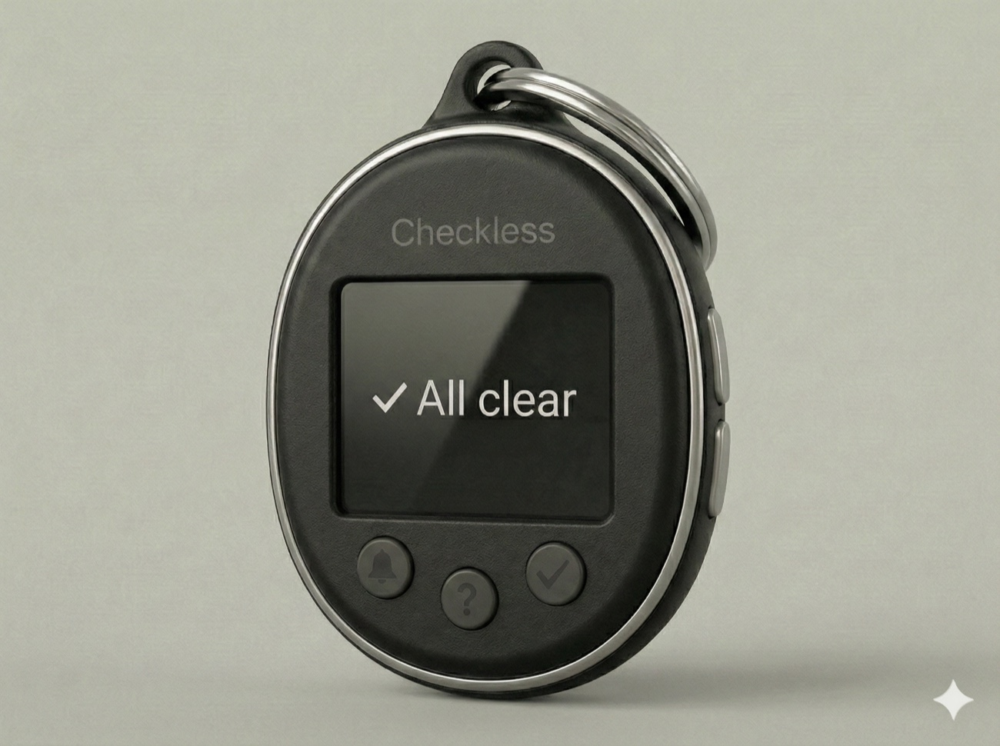
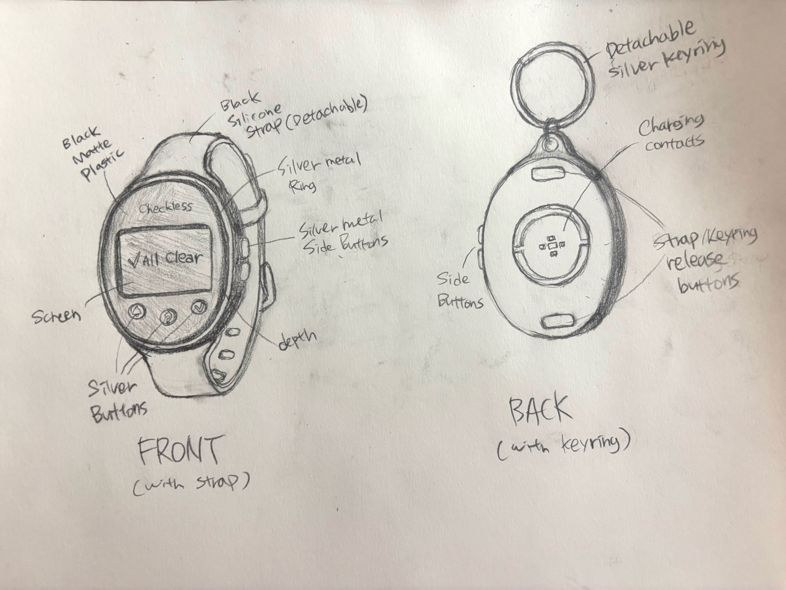

Physical Interfaces · Team concept
Checkless
A wearable that tells students when something has changed.

My contribution
I co-designed the device and companion app flows and produced the product video scene by scene.
The challenge
The team’s proposal describes students repeatedly checking email, course platforms, and group chats for changes. Uncertainty about rooms and deadlines was taking attention away from their work.
How we designed it
We designed a watch that detaches into a keychain. The companion app handles setup, while the device shows an “All clear” state and alerts students to meaningful changes. Physical buttons let them check status, mute alerts, and acknowledge an update.


The prototype
The sketches and device model explored how the screen and buttons fit into both ways of carrying it. The next test would compare the “All clear” state and change alerts in a realistic class-day scenario.